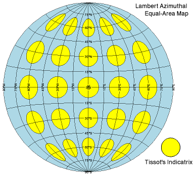

The ELLIPSE function adds an ellipse annotation to an existing IDL graphic.

The following lines create the graphic shown at the top of this topic.
map = MAP('Lambert Azimuthal', $
LIMIT=[-90,-90,90,90], $
FILL_COLOR="light_blue")
t = TEXT([0.70,0.74], [0.92,0.88], $
["Lambert Azimuthal","Equal-Area Map"])
; Create ellipses within the data space.
for lon=-60,60,30 do for lat=-60,60,30 do $
e = ELLIPSE(lon, lat, MAJOR=10, $
/DATA, FILL_COLOR="yellow")
t = TEXT(0.74, 0.09, "Tissot's Indicatrix")
; Create an ellipse outside of the data.
e = ELLIPSE(0.85, 0.2, MAJOR=0.04, $
FILL_COLOR="yellow")
; Change a property
e.THICK = 2
See Annotations Examples for additional examples using the ELLIPSE function.
graphic = ELLIPSE( X , Y , [, Z] [, Format] [, Keywords=value ] [, Properties = variable ])
Keywords are applied only during the initial creation of the graphic.
[, / DATA ] [, / DEVICE ] [, ECCENTRICITY = floating point {0.0 to 1.0}] [, MAJOR = value ] [, MINOR = value ] [, / NORMAL ] [, TARGET = variable ] [, THETA = value ]
Properties can be set as keywords to the function during creation, or retrieved or changed using the "." notation after creation.
Note: Unlike other keywords in IDL, you cannot use an abbreviated form of the property name when setting them during creation. Instead, you must use the full property name.
ANTIALIAS , CLIP , COLOR , FILL_BACKGROUND , FILL_COLOR , FILL_TRANSPARENCY , HIDE , LINESTYLE , NAME , THICK , TRANSPARENCY , UVALUE , WINDOW
The ELLIPSE function returns a reference to the created annotation. Use the returned reference to manipulate the annotation after creation by changing properties or by calling methods.
The center location of the ellipse, in data, normal, or device coordinates. For two-dimensional graphics the Z coordinate may be omitted.
A string that sets line format properties using short tokens to represent the ellipse outline color, linestyle, and thickness values. For example, to create a solid red outline with a thickness value of 2, use the following:
p = ELLIPSE(x, y, '-r2')
Tokens in the Format string represent values of the LINESTYLE, COLOR, and THICK properties. From one to three tokens can be present, and the tokens may be in any order. Tokens are case sensitive. For more information about the syntax of the Format argument, see Formatting IDL Graphics Symbols and Lines .
Keywords are applied only during the initial creation of the graphic.
Set this keyword if the input arguments are specified in data coordinates. Setting this property inserts the ellipse into the data space, otherwise the ellipse is added to the annotation layer.
Set this keyword if values are specified in device coordinates (pixels) for the MARGIN and POSITION properties. (Normalized coordinates are the default for these properties.)
Set this keyword to a floating-point value between 0.0 and 1.0 that specifies the eccentricity of the ellipse. The default is 0. This property is ignored if MINOR is present.
Set this keyword to the length of the semimajor axis for the ellipse, in data, normal, or device coordinates.
Set this keyword to the length of the semiminor axis for the ellipse, in data, normal, or device coordinates. If ECCENTRICITY and MINOR are not specified then a circle is drawn.
Set this keyword if the input arguments are specified in normalized ( [0, 1] ) coordinates (the default).
Set this keyword to the graphic object to use if points are specified in data coordinates. By default, the current graphic is used.
Set this keyword to the angle (in degrees) to rotate the ellipse. If a single value is supplied, the ellipse is rotated counter-clockwise from horizontal. If a three-element vector is supplied, the values define the degrees of rotation around the X, Y, and Z axis, respectively. Rotation is applied in the order of X, Y, and then Z.
By default anti-aliasing is used when drawing lines. Set this property to 0 to disable anti-aliasing.
Set this property to 1 to clip portions of the graphic that lie outside of the dataspace range, or to 0 to disable clipping. The default is 1. This property is ignored unless the DATA property is set.
Set this property to a string or RGB vector that specifies the color of the ellipse outline. The default is "black".
By default the ellipse is filled with the color white. Set this property to 0 to turn off the fill.
Set this property to a string or RGB vector that specifies the fill color inside the ellipse. The default is "white".
An integer between 0 and 100 that specifies the percent transparency of the inside of the ellipse. The default value is the same as the TRANSPARENCY property.
Set this property to 1 to hide the graphic. Set HIDE to 0 to show the graphic.
An integer or string specifying the line style for the ellipse outline. For the list of integers and strings you can use with the LINESTYLE property, see Formatting IDL Graphics Symbols and Lines .
A string that specifies the name of the graphic. The name can be used to retrieve the graphic using the brackets array notation. If NAME is not set then a default name is chosen based on the graphic type.
Set this property to a value between 0 and 10 that specifies the thickness of the ellipse outline. A thickness of 0 displays a thin hairline on the chosen device. The default value is 1.
An integer between 0 and 100 that specifies the percent transparency of the ellipse. The default value is 0.
Set this property to an IDL variable of any data type.
This property retrieves a reference to the window object which contains the graphic.
|
8.0 |
Introduced |
|
8.1 |
Added the UVALUE property, The THICK property was changed to accept a value between 0 and 10. Added the Delete method. |